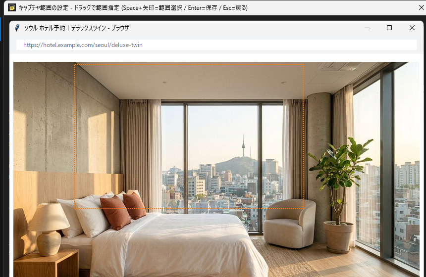
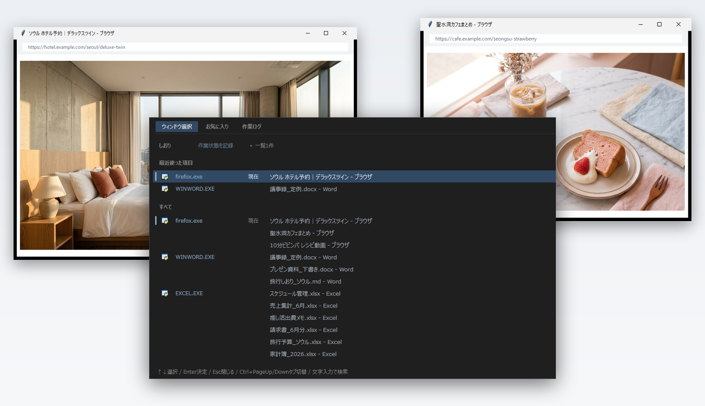
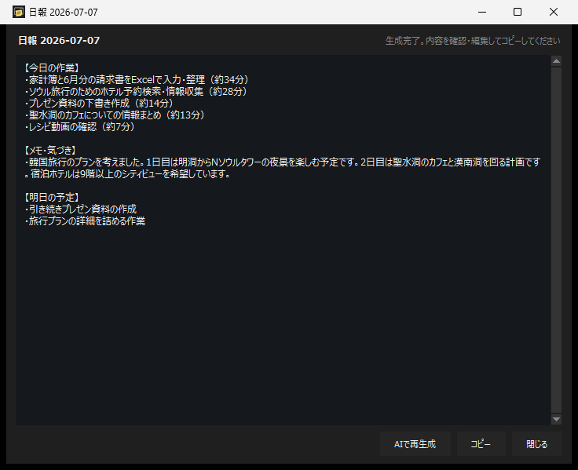
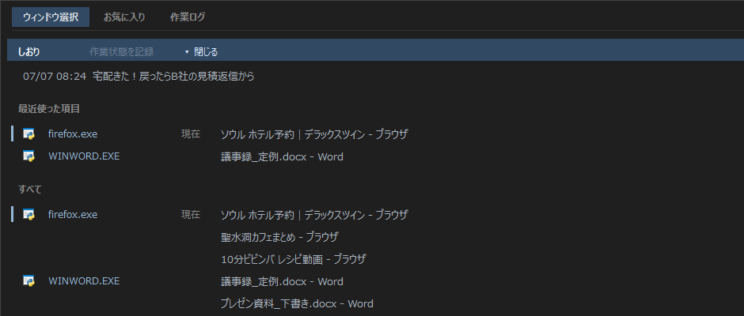
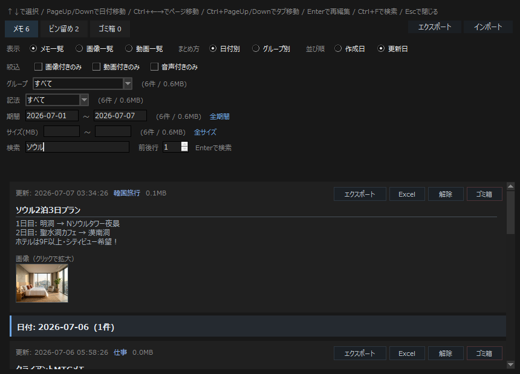
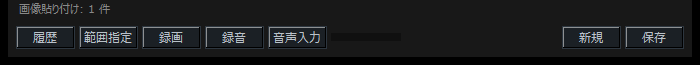

Ctrl + W
指定範囲キャプチャ
残したい部分をドラッグでなぞるだけ。ウィンドウごと、領域ごとに切り取って、そのまま付箋メモに貼り付きます。Web会議や動画の一場面にも。
仕事の資料も、旅行の計画も、推し活のメモも。ウィンドウ切替・画面キャプチャ・付箋メモ・履歴検索を、ひとつの操作面で扱うWindows向け常駐ツールです。

Live demo
開いているウィンドウへ戻る、よく使う資料を開く、作業ログをたどる、画面を切り取って残す。日々の細かい移動と記録を、同じ画面で扱えます。

Use cases
資料づくりの合間にホテルを比較して、レシピを保存して、また仕事に戻る。画面を何度も行き来する毎日の、開く・戻る・残す・探すを短い操作にまとめます。
大量に開いたExcelやWordも、ファイル名の一覧から探してすぐ前面に戻せます。
よく使うフォルダー、ファイル、URLをグループごとに整理して開けます。
予約ページの比較も、動画の一場面も。指定した領域だけをCtrl+Wで切り取ってメモに貼れます。
残したメモと開いた資料の流れを、あとから検索してたどれます。
Features
開いている画面へ戻る、気づきを画像ごと残す、あとから探し直す。さらに中断からの復帰やAIによる日報作成まで、1日の流れをまるごと支えます。





残したい部分をドラッグでなぞるだけ。ウィンドウごと、領域ごとに切り取って、そのまま付箋メモに貼り付きます。Web会議や動画の一場面にも。

貼り付けた画像に、ペン、直線、四角、矢印、文字で書き込み。あとから移動や削除もできます。

大量に開いたExcelやWordも、ファイル名の一覧からキーボードで選ぶだけ。プレビューを目で追う時間がなくなります。

よく使うフォルダー、ファイル、URLをグループで整理。それぞれにメモも添えられます。

開いたウィンドウと資料を日別に自動記録。何にどれだけ時間を使ったかが、サマリでひと目で分かります。
範囲指定の動画録画、会議の録音、音声入力と文字起こし、AIへの問い合わせ・翻訳・要約まで。付箋メモの下のボタンから、そのまま使えます。

BOOTHで配布中の無料版について： ウィンドウ切替・お気に入り・範囲キャプチャ・画像編集・付箋メモ・履歴検索・作業ログ・中断しおり・Excel / ZIP出力はそのままお使いいただけます。 AI日報、範囲録画、録音、音声入力、文字起こし、AI連携（問い合わせ・翻訳・要約）は、現在BOOTHで配布している版には含まれていません。
Free download
無料版をそのままダウンロードできます。開発を応援したい方向けに開発支援版（中身は無料版と同じ）も用意しています。